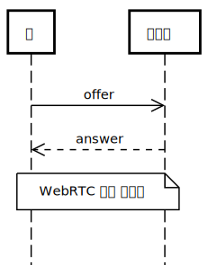
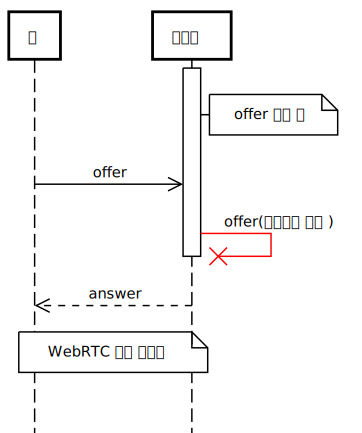
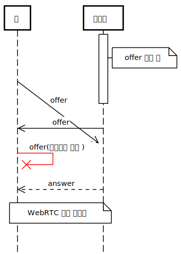

연결을 형성하는 RTCEngine
두 사용자가 서로 데이터를 주고받으려면 먼저 연결이 되어야 합니다. 연결 관리를 담당하는 RTCEngine 클래스에 대해 알아봅시다.
빠른 가이드
(이제부터 나오는 자바스크립트 코드는 다른 말이 없는 한 앞에서 만든 index.js의 내용입니다.)
설치가 끝났으니 이 가이드의 목표인 WebRTC로 데이터 주고받기를 시작해봅시다. 그러러면 먼저 두 피어 간 WebRTC 연결을 형성해야 합니다. 여기서 피어의 뜻을 찾아보면 "계층적 구조의 프로토콜을 사용하는 통신망의 동일 프로토콜 계층에서 대등한 지위로 동작하는 기능 단위 또는 장치이다"(해시넷 문서에서 가져옴)이라고 어렵게 쓰여져 있는데, 여기서는 한 RTCEngine 인스턴스를 의미한다고 생각하면 쉬울거 같습니다.
서로 연결하고자 하는 피어는(엔진 인스턴스는) 서로 물리적으로 떨어져 있을 수도, 같은 컴퓨터의 서로 다른 탭일수도, 심지어 같은 탭 안의 두 엔진 인스턴스일수도 있습니다. 이 가이드에서는 같은 페이지에 접속한 두 탭끼리 연결하는 걸 목표로 합니다.
연결하기
import 문으로 불러온 RTCEngine 클래스의 인스턴스를 생성하면 연결이 자동으로 시작됩니다. 그런데 두 피어가 연결을 하려면 어떤 방식으로든 메시지를 주고받아야 합니다. 이 메시징을 도와주는 오브젝트가 바로 시그널러 입니다. 시그널러에 대해서는 다음 문서에서 더 자세히 다루도록 하겠습니다.
여기서는 BroadcastChannel이라는 방식을 이용해 같은 주소에 있는 서로 다른 탭끼리 연결할 수 있게 도와주는 LocalSignaler를 사용하겠습니다. index.js의 내용을 다음과 같이 업데이트해주세요.
// LocalSignaler는 rtc-engine 패키지에 내장되어있습니다.
import RTCEngine, { LocalSignaler } from 'https://jspm.dev/rtc-engine@1'
const signaler = new LocalSignaler()
const engine = new RTCEngine(signaler)그리고 두 탭에서 개발 서버를 열어준 후, 브라우저 콘솔을 확인해보세요. Connected라는 로그가 찍혀 있으면 연결에 성공한겁니다.
무슨 일이 일어난 걸까?
위 코드의 각 라인이 무슨 일을 하는지 하나씩 알아봅시다.
첫번째 줄에서는 RTCEngine과 LocalSignaler 클래스를 불러옵니다.
두번째 줄에서는 LocalSignaler 클래스의 인스턴스(이하 시그널러)를 생성합니다. 시그널러가 하는 일은 간단해요. 엔진이 시그널러에게 메시지를 보내달라고 요청하면 메시지를 보내고, 상대가 메시지를 보내면 받아서 엔진한테 전달해주는거에요.
세번째 줄에서는 RTCEngine 클래스의 인스턴스(이하 엔진)을 생성합니다. 엔진은 생성되면 자동으로 연결 과정을 시작해요. 첫번재 인자로 넘겨받은 시그널러를 이용해 상대 피어와 메시지를 주고받으며 WebRTC 연결을 형성하는거죠.
엔진 인스턴스가 생성될 때 자동으로 연결을 시작하지 않게 하고 싶다면 두번째 인자로 autoConnect 옵션을 넘겨줄 수 있어요.
const engine = new RTCEngine(signaler, { autoConnect: false })이상 간략하게 연결 과정에 대해서 알아봤어요. 좀 더 자세히 알고싶다면 아래 디테일 가이드와 바로 다음 순서인 시그널러 API 문서를 참조해주세요.
자동 연결 관리
RTCEngine의 중요한 특징은 자동으로 연결을 관리한다는 것입니다. 두 탭중 하나를 닫고, 살아있는 탭의 콘솔을 확인해보세요. 되지도 않을 재연결을 필사적으로 시도하고 있는 엔진의 모습을 보실 수 있어요. 여기서는 두 탭끼리 연결했기 때문에 자동 연결 관리란 기능이 별로 중요하지 않게 느껴질수도 있지만, 나중에 물리적으로 떨어져 있는 피어끼리 연결할때는 이 기능이 꽤 유용할겁니다.
디테일 가이드
RTCEngine이 연결을 어떻게 관리하는지 자세히 알아봅시다. 레퍼런스의 js/RTCEngine.js 파일을 보면서 읽으면 더 쉬울거에요.
개략적인 연결 과정은 다음과 같습니다. 각 단계는 아래에서 자세히 설명합니다.
RTCEngine인스턴스 생성- 두 피어의 역할 배정
- Perfect Negotiation Pattern을 통해 연결 형성
- 연결이 끊어지면 재연결 시도
첫번째. RTCEngine 인스턴스 생성
피어가 RTCEngine 인스턴스를 시그널러와 함께 생성하면 생성자 메소드 constructor()이 호출됩니다. 생성자는 첫번째 인자로 시그널러 오브젝트를, 두번째 인자로 옵션 오브젝트를 받습니다. (받을 수 있는 모든 옵션의 리스트는 레퍼런스의 constructor() 메소드에 대한 설명을 참조하세요.) 옵션 오브젝트에 autoConnect 속성이 false로 명시되어 있다면 connect()또는 start() 메소드를 직접 호출해서 두번째 단계부터 시작해야 합니다.
autoConnect가 true라면 connect() 메소드가 자동으로 호출되고, 그 결과 start() 메소드가 호출됩니다. start()메소드에서 실질적인 연결 형성을 위한 작업들이 이루어집니다.
두번째. 역할 배정
여기부터 내용을 이해하시려면 WebRTC 연결이 어떻게 이루어지는지에 대해 알고 있어야 합니다. 잘 모른다면 MDN의 WebRTC 가이드를 읽어보세요.
두 피어가 WebRTC 연결을 형성하기 위해서는 ice candidate와 description 두 종류의 메시지를 주고받아야 합니다. RTCEngine은 Perfect Negotiation Pattern이라는 패턴을 따라서 위 메시지를 주고받습니다. 이 패턴을 활용하려면 서로의 role이 impolite 또는 polite로 배정되어야 합니다. 이 과정은 assignRole() 메소드에서 Math.random()으로 생성한 난수를 서로 교환함으로써 이루어집니다.
start() 메소드는 연결을 시작하기 전에 assignRole() 메소드를 호출해서 역할을 배정합니다.
생성자에 role 옵션을 넘겨주면 이 과정을 건너뛸수도 있습니다. Production에서는 별로 유용하지 않을수도 있지만 WebRTC 연결을 디버깅할때 꽤 유용할수도 있어요.
const engine = new RTCEngine(signaler, {
role: 'impolite' // 또는 'polite'
})세번째. Perfect Negotiation Pattern을 통해 연결 형성
더 자세한 설명은 MDN의 Perfect Negotiation Pattern 문서를 읽어보세요.
역할이 배정되면 start() 메소드는 RTCEngine-internal이라는 소켓을 엽니다. 소켓을 열게 되면 데이터 채널이 만들어지면서 WebRTC 연결 과정이 시작됩니다.
RTCPeerConnection 인스턴스는 negotiationneeded 이벤트와 icecandidate 이벤트를 발생시킵니다. negotiationneeded는 두 피어 간 session negotiation이 필요할 때, 즉 서로의 description을 주고받아야 할 필요가 있을 때 발생하며 여기서는 위에서 데이터 채널을 연 결과 발생하게 됩니다. icecandidate는 상대에게 전송할 ice candidate가 만들어졌을 때 발생합니다. 엔진은 negotiationneeded 이벤트 발생 시 local description을 시그널러로 전송하고 icecandidate 이벤트 발생 시 생성된 ice candidate를 시그널러로 전송합니다.
한편, 상대에게서 시그널러로 메시지를 받을 수도 있습니다. ice candidate를 받을 경우 RTCPeerConnection의 addIceCandidate() 메소드로 상대의 ice candidate를 브라우저에게 전달해줍니다. 상대의 description을 받을수도 있는데, 여기가 Perfect Negotiation Pattern의 핵심입니다.
원래대로라면 한 피어가 description을 전송하면 다른 피어가 그에 대한 대답으로 description을 전송하는 방식으로 description을 주고받습니다. 여기서 처음 전송하는 description을 offer, 대답을 answer이라고 부릅니다. 하지만 RTCEngine은 상대의 대답을 기다리지 않고 일단 양쪽 모두 offer를 상대에게 전송하려고 시도합니다. 이 경우 세가지 시나리오를 생각해 볼 수 있습니다.
- offer이 상대가 offer를 생성 및 보내기 전에 도착
- offer이 상대가 offer를 생성 및 보내는 도중에 도착
- offer이 상대가 offer을 생성 및 보낸 후 도착
1번 시나리오의 경우 아무런 문제가 발생하지 않습니다. 상대는 RTCPeerConnection의 setRemoteDescription()을 호출해 offer을 받고, 그 대답으로 answer을 생성해 상대에게 전송합니다. 이 경우 일반적인 연결 형성 시나리오와 다른게 없습니다.

2번 시나리오의 경우 서로 offer를 생성하려고 하고 있으므로 문제가 발생합니다. 이렇게 서로 offer를 생성하려고 하는 상황을 offer collision이라고 부릅니다.
여기서 앞에서 설정해 둔 role이 사용됩니다.
polite 피어는 상대방의 offer를 우선으로, impolite 피어는 자신이 보낸 offer를 우선으로 처리합니다.
결국 impolite피어의 offer이 받아들여지는 샘이죠. 만약 상대가 polite, 내가 impolite라면 상대는 setRemoteDescription()를 호출해 offer를 받아들이고 answer을 나에게 보냅니다.
이때 상대의 setLocalDescription() 메소드가 실행 중이었다면 이 메소드는 에러를 내고 offer 생성을 중단하게 됩니다. 실제로 소스 코드를 보면 이부분은 try ... finally 문으로 둘러싸여져 있습니다.

상대가 offer 생성을 완료는 했지만 아직 보내지 않은 경우, 일단 만든 offer는 나에게 보내지게 됩니다. 그러면 나는 impolite니깐 상대가 offer을 보내도 사용하지 않고 무시합니다.

3번 시나리오도 결국엔 2번 시나리오의 "상대가 offer 생성을 완료한 경우"에 해당합니다. 메시지 교환 과정은 윗 그림대로 되겠죠.
이렇게 description과 ice candidate의 교환이 완료되면 연결이 될 수도 있습니다. 하지만 네트워크 환경에 따라서 메시지 교환이 정상적으로 이루어졌음에도 불구하고 연결이 이루어지지 않을수도 있습니다. 이 경우 STUN과 TURN 서버의 도움을 받아야 합니다.
RTCEngine은 기본 설정으로 구글이 제공하는 STUN 서버를 사용하며 TURN 서버는 사용하지 않습니다. 처음 엔진의 생성자를 호출할 때 iceServers 옵션으로 STUN과 TURN 서버를 설정할 수 있습니다. 또한 updateConfig() 메소드를 통해서 연결중에 STUN 및 TURN 서버를 바꿀수도 있습니다.
// 생성자에 ice serves 전달
// 아래 stun server는 실제로 존재하지 않습니다.
const engine = new RTCEngine(signaler, {
iceServers: [
{ urls: ['stun:my.awesome.stun.server.com:19302'] }
]
})
// updateConfig()로 설정 업데이트
// 명시해준 속성만 업데이트됩니다.
engine.updateConfig({
iceServers: [
{ urls: ['stun:my.awesome.stun.server.com:19302'] }
]
})네번째. 연결이 끊어지면 재연결 시도
어느 한쪽의 인터넷이 잠시 끊긴다거나 하는 여러가지 이유로 WebRTC 연결은 언제나 끊길 수 있습니다. 연결이 끊긴 지 약 5초 후(정확히는 RTCPeerConnection의 readyState가 failed가 되었을 때)에도 연결이 정상화되지 않는다면 ICE Restart를 시도합니다. 그러면 다시 description과 ice candidate 교환이 이루어지며 두번째 과정이 수행됩니다.